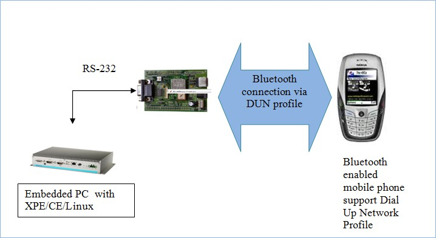
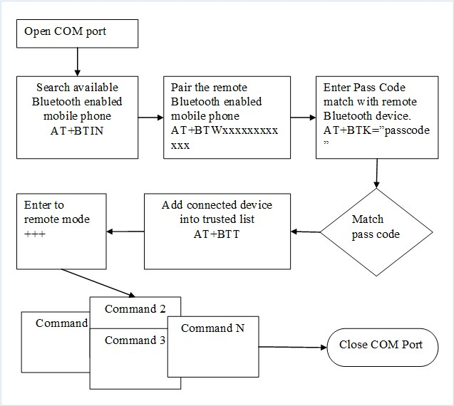

8.3.2 Pairing to cell phone to perform remote control
With Bluetooth serial device, pairing to cell phone (exp. Nokia phone) to perform simple remote control such as remotely answer call and remotely perform dialing.
A. Understand AT command that support by the Bluetooth enabled mobile phone
example Nokia 6630 are following:-
| NO | AT Command | Description | Remark |
| 1 | ATI2 | Show Nokia phone device | |
| 2 | ATI3 | Show Nokia phone model | |
| 3 | AT+CGSN | Show phone serial number | |
| 4 | AT+CSQ | Show signal quality | RESPONSE is +CSQ:<rssi>,99
<rssi> stands for:- 0 : -113dBm or less 1 : -111dBm 2...3 : -109...-53dBm 31 : -51dbm or greater 99 : not known or not detectable |
| 5 | AT+CBC=? | Show battery power status | RESPONSE: +CBC: <bcs>, <bcl>
|
| 6 | ATA | Answer call |
Remarks:-
a. There are a lot AT command available; you may download it from the mobile phone official website.
b. Some AT command is blocked/disabled by default for security purpose; example trigger SMS. Please check the AT command list from the dedicated mobile phone official website.
B. Understand application flow:-
